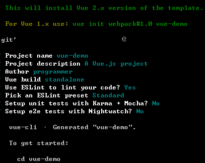

<!DOCTYPE html>


  <html class="light page-post">


<head><meta name="generator" content="Hexo 3.8.0">
  <meta charset="utf-8">
  
  <title>vue开发环境搭建笔记 | 胡思旺</title>

  <meta name="viewport" content="width=device-width, initial-scale=1, maximum-scale=1">

  
    <meta name="keywords" content="全栈,微服务,Java,Netty,Vue,机器学习,Python">
  

  <meta name="description" content="vue开发环境搭建笔记 Vue.js是一套构建用户界面的 “渐进式框架”，核心库只关注视图层,提供试图与数据的双向绑定    安装node.js  node.js官方下载地址    安装操作系统对应版本的node.js    安装过程中如果出现添加环境变量选项必须选上    安装结束控制台输入node或npm命令，命令执行成功表示node安装成功      安装cnpm 由于npm下载包非常的忙，">
<meta property="og:type" content="article">
<meta property="og:title" content="vue开发环境搭建笔记">
<meta property="og:url" content="http://yoursite.com/2018/11/13/vue开发环境搭建笔记/index.html">
<meta property="og:site_name" content="胡思旺">
<meta property="og:description" content="vue开发环境搭建笔记 Vue.js是一套构建用户界面的 “渐进式框架”，核心库只关注视图层,提供试图与数据的双向绑定    安装node.js  node.js官方下载地址    安装操作系统对应版本的node.js    安装过程中如果出现添加环境变量选项必须选上    安装结束控制台输入node或npm命令，命令执行成功表示node安装成功      安装cnpm 由于npm下载包非常的忙，">
<meta property="og:locale" content="default">
<meta property="og:image" content="http://yoursite.com/2018/11/13/vue开发环境搭建笔记/vue1.png">
<meta property="og:updated_time" content="2018-11-23T04:39:13.043Z">
<meta name="twitter:card" content="summary">
<meta name="twitter:title" content="vue开发环境搭建笔记">
<meta name="twitter:description" content="vue开发环境搭建笔记 Vue.js是一套构建用户界面的 “渐进式框架”，核心库只关注视图层,提供试图与数据的双向绑定    安装node.js  node.js官方下载地址    安装操作系统对应版本的node.js    安装过程中如果出现添加环境变量选项必须选上    安装结束控制台输入node或npm命令，命令执行成功表示node安装成功      安装cnpm 由于npm下载包非常的忙，">
<meta name="twitter:image" content="http://yoursite.com/2018/11/13/vue开发环境搭建笔记/vue1.png">

  

  
    <link rel="icon" href="/favicon.ico">
  

  <link href="/css/styles.css?v=c114cben" rel="stylesheet">


  
    <link rel="stylesheet" href="/css/personal-style.css">
  

  

  
  <script type="text/javascript">
    var _hmt = _hmt || [];
    (function() {
      var hm = document.createElement("script");
      hm.src = "//hm.baidu.com/hm.js?57e94d016e201fba3603a8a2b0263af0";
      var s = document.getElementsByTagName("script")[0];
      s.parentNode.insertBefore(hm, s);
    })();
  </script>


  
  <script type="text/javascript">
	(function(){
	    var bp = document.createElement('script');
	    var curProtocol = window.location.protocol.split(':')[0];
	    if (curProtocol === 'https') {
	        bp.src = 'https://zz.bdstatic.com/linksubmit/push.js';        
	    }
	    else {
	        bp.src = 'http://push.zhanzhang.baidu.com/push.js';
	    }
	    var s = document.getElementsByTagName("script")[0];
	    s.parentNode.insertBefore(bp, s);
	})();
  </script>


  

</head>
</html>
<body>


  
    <span id="toolbox-mobile" class="toolbox-mobile">盒子</span>
  

  <div class="post-header CENTER">
   
  <div class="toolbox">
    <a class="toolbox-entry" href="/">
      <span class="toolbox-entry-text">盒子</span>
      <i class="icon-angle-down"></i>
      <i class="icon-home"></i>
    </a>
    <ul class="list-toolbox">
      
        <li class="item-toolbox">
          <a class="CIRCLE" href="/archives/" rel="noopener noreferrer" target="_self">
            博客
          </a>
        </li>
      
        <li class="item-toolbox">
          <a class="CIRCLE" href="/project/" rel="noopener noreferrer" target="_self">
            项目
          </a>
        </li>
      
        <li class="item-toolbox">
          <a class="CIRCLE" href="/about/" rel="noopener noreferrer" target="_self">
            联系
          </a>
        </li>
      
    </ul>
  </div>


</div>


  <div id="toc" class="toc-article">
    <strong class="toc-title">文章目录</strong>
    <ol class="toc"><li class="toc-item toc-level-1"><a class="toc-link" href="#vue开发环境搭建笔记"><span class="toc-text">vue开发环境搭建笔记</span></a><ol class="toc-child"><li class="toc-item toc-level-2"><a class="toc-link" href="#安装node-js"><span class="toc-text">安装node.js</span></a></li><li class="toc-item toc-level-2"><a class="toc-link" href="#安装cnpm"><span class="toc-text">安装cnpm</span></a></li><li class="toc-item toc-level-2"><a class="toc-link" href="#安装vue-cli"><span class="toc-text">安装vue-cli</span></a></li><li class="toc-item toc-level-2"><a class="toc-link" href="#新建Vue项目"><span class="toc-text">新建Vue项目</span></a></li><li class="toc-item toc-level-2"><a class="toc-link" href="#iView介绍"><span class="toc-text">iView介绍</span></a></li><li class="toc-item toc-level-2"><a class="toc-link" href="#在项目中引入iView"><span class="toc-text">在项目中引入iView</span></a></li><li class="toc-item toc-level-2"><a class="toc-link" href="#Vue中引入axios"><span class="toc-text">Vue中引入axios</span></a></li></ol></li></ol>
  </div>


<div class="content content-post CENTER">
   <article id="post-vue开发环境搭建笔记" class="article article-type-post" itemprop="blogPost">
  <header class="article-header">
    <h1 class="post-title">vue开发环境搭建笔记</h1>

    <div class="article-meta">
      <span>
        <i class="icon-calendar"></i>
        <span>2018.11.13</span>
      </span>

      
        <span class="article-author">
          <i class="icon-user"></i>
          <span>siwang.hu</span>
        </span>
      

      


      
        <span>
          <i class="icon-comment"></i>
          <a href="http://www.github.com/siwanghu/2018/11/13/vue开发环境搭建笔记/#disqus_thread"></a>
        </span>
      

      
      
    </div>
  </header>

  <div class="article-content">
    
      <h1 id="vue开发环境搭建笔记"><a href="#vue开发环境搭建笔记" class="headerlink" title="vue开发环境搭建笔记"></a>vue开发环境搭建笔记</h1><blockquote>
<p>Vue.js是一套构建用户界面的 “渐进式框架”，核心库只关注视图层,提供试图与数据的双向绑定  </p>
</blockquote>
<h2 id="安装node-js"><a href="#安装node-js" class="headerlink" title="安装node.js"></a>安装node.js</h2><blockquote>
<ul>
<li><p>node.js官方<a href="https://nodejs.org/en/download/" target="_blank" rel="noopener">下载地址</a>  </p>
</li>
<li><p>安装操作系统对应版本的node.js  </p>
</li>
<li><p>安装过程中如果出现添加环境变量选项必须选上  </p>
</li>
<li><p>安装结束控制台输入<strong>node</strong>或<strong>npm</strong>命令，命令执行成功表示node安装成功  </p>
</li>
</ul>
</blockquote>
<h2 id="安装cnpm"><a href="#安装cnpm" class="headerlink" title="安装cnpm"></a>安装cnpm</h2><blockquote>
<p>由于npm下载包非常的忙，安装国内代理cnpm工具  </p>
<ul>
<li><p>安装命令为：<strong>npm install -g cnpm –registry=<a href="https://registry.npm.taobao.org" target="_blank" rel="noopener">https://registry.npm.taobao.org</a></strong>  </p>
</li>
<li><p>以后需要使用npm命令的地方可以替换为cnpm命令  </p>
</li>
</ul>
</blockquote>
<h2 id="安装vue-cli"><a href="#安装vue-cli" class="headerlink" title="安装vue-cli"></a>安装vue-cli</h2><blockquote>
<p>vue-cli是vue官方提供的一个命令行工具，可用于快速搭建大型单页应用。该工具提供开箱即用的构建工具配置，带来现代化的前端开发流程  </p>
<ul>
<li><p>安装命令为：<strong>cnpm install -g vue-cli</strong>  </p>
</li>
<li><p>检查是否安装成功可以在控制台输入vue，命令执行成功表示node安装成功  </p>
</li>
</ul>
</blockquote>
<h2 id="新建Vue项目"><a href="#新建Vue项目" class="headerlink" title="新建Vue项目"></a>新建Vue项目</h2><blockquote>
<ul>
<li><p><strong>vue init webpack vue-demo</strong>&nbsp;&nbsp;(vue-demo为项目名字)  </p>
</li>
<li><p>按照脚手架工具配置项目信息<br>  </p>
</li>
<li><p>进入项目根目录执行<strong>cnpm install</strong>命令,安装项目依赖的包,安装完成之后，项目目录下多出node_modules文件夹  </p>
</li>
<li><p>根目录执行<strong>cnpm run dev</strong>命令，运行项目</p>
</li>
</ul>
</blockquote>
<h2 id="iView介绍"><a href="#iView介绍" class="headerlink" title="iView介绍"></a>iView介绍</h2><blockquote>
<ul>
<li><p>iView<a href="https://www.iviewui.com/" target="_blank" rel="noopener">官网</a>，iView组件是一套基于vue的前端组件库，可以帮助前端工作者快速开发美观的前端界面</p>
</li>
<li><p>iView提供完整的教程，上手简单快速  </p>
</li>
</ul>
</blockquote>
<h2 id="在项目中引入iView"><a href="#在项目中引入iView" class="headerlink" title="在项目中引入iView"></a>在项目中引入iView</h2><blockquote>
<ul>
<li>在main.js中添加  <figure class="highlight plain"><table><tr><td class="gutter"><pre><span class="line">1</span><br><span class="line">2</span><br><span class="line">3</span><br></pre></td><td class="code"><pre><span class="line">import iView from &apos;iview&apos;</span><br><span class="line">import &apos;iview/dist/styles/iview.css&apos;    // 使用 CSS</span><br><span class="line">Vue.use(iView)</span><br></pre></td></tr></table></figure>
</li>
</ul>
</blockquote>
<blockquote>
<ul>
<li>完整main.js文件  <figure class="highlight plain"><table><tr><td class="gutter"><pre><span class="line">1</span><br><span class="line">2</span><br><span class="line">3</span><br><span class="line">4</span><br><span class="line">5</span><br><span class="line">6</span><br><span class="line">7</span><br><span class="line">8</span><br><span class="line">9</span><br><span class="line">10</span><br><span class="line">11</span><br><span class="line">12</span><br><span class="line">13</span><br><span class="line">14</span><br><span class="line">15</span><br></pre></td><td class="code"><pre><span class="line">import Vue from &apos;vue&apos;</span><br><span class="line">import App from &apos;./App&apos;</span><br><span class="line">import router from &apos;./router&apos;</span><br><span class="line">import iView from &apos;iview&apos;</span><br><span class="line">import &apos;iview/dist/styles/iview.css&apos;    // 使用 CSS</span><br><span class="line"></span><br><span class="line">Vue.config.productionTip = false</span><br><span class="line">Vue.use(iView)</span><br><span class="line">/* eslint-disable no-new */</span><br><span class="line">new Vue(&#123;</span><br><span class="line">  el: &apos;#app&apos;,</span><br><span class="line">  router,</span><br><span class="line">  template: &apos;&lt;App/&gt;&apos;,</span><br><span class="line">  components: &#123; App &#125;</span><br><span class="line">&#125;)</span><br></pre></td></tr></table></figure>
</li>
</ul>
</blockquote>
<blockquote>
<ul>
<li>安装iView，<strong>cnpm install –save iview</strong>  </li>
</ul>
</blockquote>
<h2 id="Vue中引入axios"><a href="#Vue中引入axios" class="headerlink" title="Vue中引入axios"></a>Vue中引入axios</h2><blockquote>
<ul>
<li><p>axios是一个基于promise的HTTP库，可以用在前端和后台中获取数据  </p>
</li>
<li><p>安装命令<strong>cnpm install axios</strong>  </p>
</li>
<li><p>组件局部引入  </p>
<figure class="highlight plain"><table><tr><td class="gutter"><pre><span class="line">1</span><br></pre></td><td class="code"><pre><span class="line">import axios from &apos;axios&apos;</span><br></pre></td></tr></table></figure>
</li>
</ul>
</blockquote>
<blockquote>
<ul>
<li>全局引入,在main.js中添加,在各个组件中this.$axios.get()使用  <figure class="highlight plain"><table><tr><td class="gutter"><pre><span class="line">1</span><br><span class="line">2</span><br></pre></td><td class="code"><pre><span class="line">import axios from &apos;axios&apos;</span><br><span class="line">Vue.prototype.$axios = axios;</span><br></pre></td></tr></table></figure>
</li>
</ul>
</blockquote>
<blockquote>
<ul>
<li>axios使用demo,<em>采用在main.js中全局引入</em>  <figure class="highlight plain"><table><tr><td class="gutter"><pre><span class="line">1</span><br><span class="line">2</span><br><span class="line">3</span><br><span class="line">4</span><br><span class="line">5</span><br><span class="line">6</span><br><span class="line">7</span><br><span class="line">8</span><br><span class="line">9</span><br></pre></td><td class="code"><pre><span class="line">this.$axios.get(&quot;/asr/asrText&quot;, &#123;</span><br><span class="line">    params: &#123;</span><br><span class="line">        deviceIdAndSessionId:_self.deviceId+&quot;:&quot;+_self.sessionId,</span><br><span class="line">    &#125;&#125;).then(result =&gt; &#123;</span><br><span class="line">          console.log(result);</span><br><span class="line">          console.log(&quot;长度&quot;+result.data.length);</span><br><span class="line">          console.log(&quot;刷新一次&quot;);</span><br><span class="line">          this.asrText=result.data;</span><br><span class="line">    &#125;).catch(err =&gt; &#123;&#125;);</span><br></pre></td></tr></table></figure></li>
</ul>
</blockquote>

    
  </div>

</article>


   
  <div class="text-center donation">
    <div class="inner-donation">
      <span class="btn-donation">支持一下</span>
      <div class="donation-body">
        <div class="tip text-center">扫一扫，支持胡思旺</div>
        <ul>
        
          <li class="item">
            
              <span>微信扫一扫</span>
            
            
          </li>
        
          <li class="item">
            
              <span>支付宝扫一扫</span>
            
            
          </li>
        
        </ul>
      </div>
    </div>
  </div>


   
  <div class="box-prev-next clearfix">
    <a class="show pull-left" href="/2018/11/08/java线程池笔记/">
        <i class="icon icon-angle-left"></i>
    </a>
    <a class="show pull-right" href="/2018/11/16/vue基础笔记/">
        <i class="icon icon-angle-right"></i>
    </a>
  </div>


   
      <div class="git"></div>
   
</div>


  <a id="backTop" class="back-top">
    <i class="icon-angle-up"></i>
  </a>


  <div class="modal" id="modal">
  <span id="cover" class="cover hide"></span>
  <div id="modal-dialog" class="modal-dialog hide-dialog">
    <div class="modal-header">
      <span id="close" class="btn-close">关闭</span>
    </div>
    <hr>
    <div class="modal-body">
      <ul class="list-toolbox">
        
          <li class="item-toolbox">
            <a class="CIRCLE" href="/archives/" rel="noopener noreferrer" target="_self">
              博客
            </a>
          </li>
        
          <li class="item-toolbox">
            <a class="CIRCLE" href="/project/" rel="noopener noreferrer" target="_self">
              项目
            </a>
          </li>
        
          <li class="item-toolbox">
            <a class="CIRCLE" href="/about/" rel="noopener noreferrer" target="_self">
              联系
            </a>
          </li>
        
      </ul>

    </div>
  </div>
</div>


  
      <div class="fexo-comments comments-post">
    
  <section class="disqus-comments">
    <div id="disqus_thread">
      <noscript>Please enable JavaScript to view the <a href="//disqus.com/?ref_noscript">comments powered by Disqus.</a></noscript>
    </div>
  </section>

  <script>
    var disqus_shortname = 'forsigner';
    
    var disqus_url = 'http://yoursite.com/2018/11/13/vue开发环境搭建笔记/';
    
    (function(){
      var dsq = document.createElement('script');
      dsq.type = 'text/javascript';
      dsq.async = true;
      dsq.src = '//' + disqus_shortname + '.disqus.com/embed.js';
      (document.getElementsByTagName('head')[0] || document.getElementsByTagName('body')[0]).appendChild(dsq);
    })();
  </script>

  <script id="dsq-count-scr" src="//forsigner.disqus.com/count.js" async></script>


    

    
    

    

    
    

  </div>

  

  <script type="text/javascript">
  function loadScript(url, callback) {
    var script = document.createElement('script')
    script.type = 'text/javascript';

    if (script.readyState) { //IE
      script.onreadystatechange = function() {
        if (script.readyState == 'loaded' ||
          script.readyState == 'complete') {
          script.onreadystatechange = null;
          callback();
        }
      };
    } else { //Others
      script.onload = function() {
        callback();
      };
    }

    script.src = url;
    document.getElementsByTagName('head')[0].appendChild(script);
  }

  window.onload = function() {
    loadScript('/js/bundle.js?235683', function() {
      // load success
    });
  }
</script>

</body>
</html>
